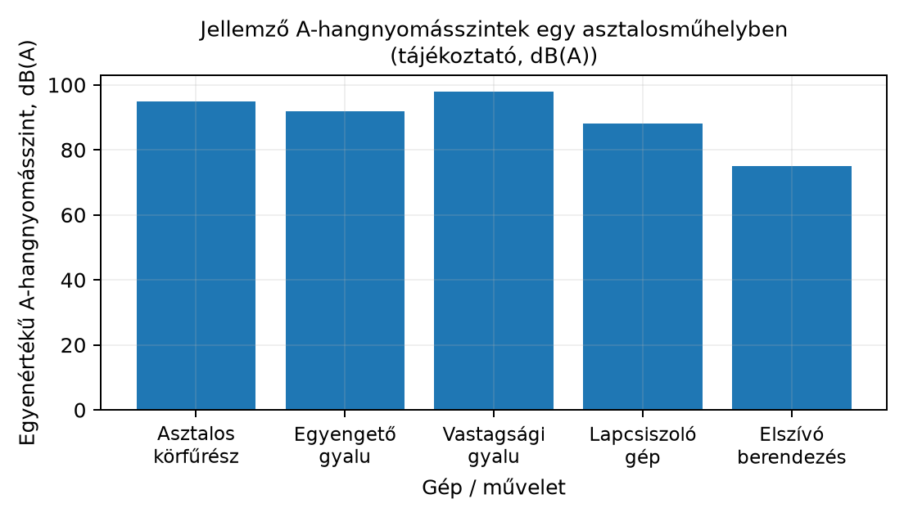
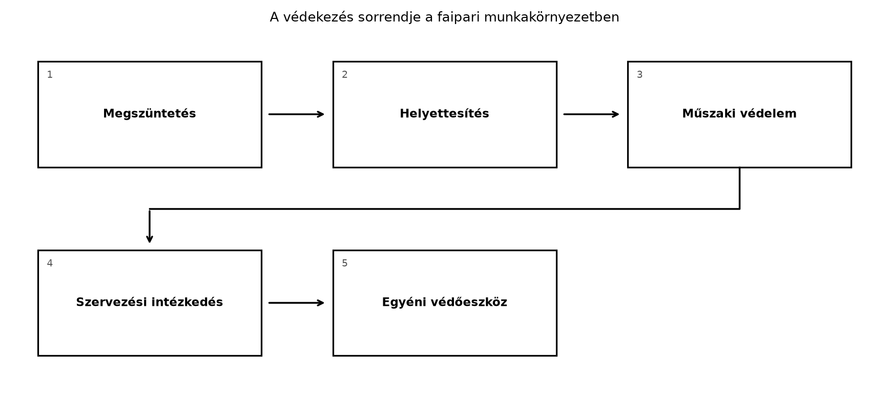

A műhelyben nem elég megtanulni, hogyan kell egy lapot kettévágni. Azt is meg kell tanulni, mit tegyünk a zajjal, a porral és a vegyszer szagával, mielőtt az károsítana bennünket. Ez az alfejezet a munkakörnyezeti hatások és a kockázatértékelés alapjait mutatja be, hogy később a Por- és forgácselszívás, fapor-expozíció és a A felületkezelés egészségvédelmi, tűz- és környezetvédelmi előírásai alfejezethez is megbízható előzményt képezzen.
Marci tanuló a tanműhelyben az asztalos körfűrészgép mellett áll. A gép hangos, a fűrészlap fűrészporfelhőt ver fel, a levegőben fenyőpor és régi lakkszag érződik. Az oktató nem elégszik meg azzal, hogy „menj arrébb”: elmagyarázza, miért kötelező ellenőrizni az elszívást, miért kell hallásvédő, és miért nem szabad a fűrészport seprűvel keverni a levegőbe, ha már van elszívás. Ez az alfejezet azt tanítja meg, hogyan ismerjük fel a veszélyforrásokat, hogyan becsüljük meg a kockázatot, és hogyan csökkentsük azt sorrendben.

A diagram azt mutatja, hogy ugyanabban a műhelyben egészen különböző hangnyomásszintek lehetnek jelen. A decibel-skála logaritmikus: 3 dB növekedés nagyjából az akusztikus energia kétszereződését jelenti. Ezért ha két 95 és 98 dB-es gép együtt üzemel, az eredő nem 193 dB, hanem a későbbi számítás szerint kb. 100 dB.
Definíció. Veszélyforrás minden olyan dolog, berendezés, anyag, munkamódszer vagy körülmény, amely sérülést, foglalkozási megbetegedést vagy károsodást okozhat. Kockázat annak a valószínűsége, hogy a veszélyforrásból ténylegesen sérülés vagy egészségkárosodás következik be, és annak várható súlyossága.
Szabály. A kockázatot egyszerű becslésben így érdemes felírni:
ahol a bekövetkezés valószínűsége (például 1–5 skálán), a lehetséges egészségkárosodás súlyossága (1–5 skálán). Minél nagyobb az szorzat, annál sürgősebb a beavatkozás.
Definíció. Munkakörnyezeti hatás minden olyan fizikai, kémiai, biológiai vagy pszichoszociális tényező, amely a munkavégzés során a dolgozót érheti. Faipari műhelyben a leggyakoribb fizikai hatások a zaj és a rezgés, kémiai hatások a fapor, az oldószerek, a ragasztó- és lakkgőzök, biológiai hatások például a penészgombák és a farontó gombák spórái, pszichoszociális hatás lehet a stressz a hajtásból, a monoton darabolásból vagy a nem egyértelmű utasításból.
Szabály. A védekezési intézkedéseket mindig ebben a sorrendben kell megvizsgálni:
Ez a rangsor azért fontos, mert a műszaki védelem a legmegbízhatóbb, míg az egyéni védőeszköz csak akkor véd, ha viselik, és ha jól választják ki, karbantartják.
A faipari gépek – körfűrész, egyengető gyalu, vastagsági gyalu, elszívó ventilátor – rendszeresen 80–100 dB(A) közötti zajt adnak. A halláskárosodás eleinte csak észrevehetetlen, előbb a magas hangok elvesztése, majd a beszédértés romlása következik be. A zaj nemcsak a fület terheli: növelheti a stresszt, a vérnyomást, fáradékonyságot és csökkentheti a koncentrációt, ami balesethez vezet.
Figyelem. A zaj megítéléséhez ne a szubjektív hangosságot használd. A decibelskálán 90 dB + 90 dB nem 180 dB, hanem 93 dB. Ha a gépek hangja zavar, és el kell kiabálnod magad 1 méterről, akkor a zajszint valószínűleg eléri vagy meghaladja a 85 dB(A)-t, ezért hallásvédő kell (ellenőrizendő: mérési adat).
Határértékek (jelölve). A magyar és európai gyakorlatban a zajra vonatkozó beavatkozási határok jellemzően: alsó beavatkozási határ 80 dB(A), felső beavatkozási határ 85 dB(A), expozíciós határérték 87 dB(A) (ellenőrizendő: az aktuális zajrendelet). E könyvben ezeket tanulási értékekként használjuk, nem tervezési előírásként.
A kézi kisgépek – felsőmaró, kézi körfűrész, szalagcsiszoló, láncfűrész – a kéz és a kar izületeit, ereit károsíthatják. A tartós kéz-kar rezgés fehérujj betegséghez (elzsibbadó, elfehéredő ujjak) és ízületi panaszokhoz vezethet. A gyártó adatlapján a rezgésgyorsulást m/s²-ben adják meg; minél nagyobb az érték, annál rövidebb ideig szabad vezetni a gépet. A határérték jellemzően a kéz-kar rezgésre 2,5 m/s² feletti beavatkozási küszöb és 5 m/s² feletti expozíciós határérték körül alakul (ellenőrizendő: aktuális rezgésrendelet).
A fapor az asztalos műhely egyik legfontosabb kémiai kockázata. A tűlevelű fapor is irritálja a légutakat, de a keményfa-por – például tölgy, bükk – a rákkeltő anyagokról szóló uniós irányelv (2004/37/EK) és hazai átültetése szerint a rákkeltő anyagokkal való munka körébe tartozik (ellenőrizendő: hatályos rendelet); a CLP-rendelet a forgalomba hozott vegyi anyagok osztályozásáról szól, nem erről. A farostok belélegezve orr- és melléküreg-nyálkahártya-gyulladást, asztmás panaszokat, bőrgyulladást okozhatnak, és hosszú távon daganatos betegség kockázatát növelhetik.
Szabály. A fapor ellen a legerősebb védelem a forrásnál történő elszívás: a gép kapcsolódjon elszívóhoz, az elszívó legyen bekapcsolva, és a zsákokat, szűrőket rendszeresen ürítsék. A port ne seprűvel kavarjuk fel, hanem porszívóval, ipari elszívóval távolítsuk el. Keményfa-pornál a forrásnál történő elszívás mellett legalább FFP2, nagyobb vagy bizonytalan porterhelésnél (csiszolás, elégtelen elszívás) FFP3 légzésvédő kell (ellenőrizendő: kockázatértékelés, MSZ EN 149, gyártói adatlap).
Tájékoztató határérték. A foglalkoztatási expozíciós határértékekben a keményfa-por belélegezhető frakciójára az uniós rákkeltő-irányelv a 2023-tól alkalmazandó 3 mg/m³ értéket írja elő (korábban átmenetileg 5 mg/m³ volt); a hazai érték és az uniós szigorítás aktuális állapota ellenőrizendő: hatályos magyar rendelet (az érték tanulási példa, tervezési előírás nem). Az értéket a műhelylevegőben méréssel lehet ellenőrizni, nem érzékszervvel.
A felületkezelés, ragasztás és higítás során illékony szerves vegyületek (VOC) kerülhetnek a levegőbe. Az oldószeres lakkok, nitróhígítók, egyes poliuretán ragasztók gőzei szédülést, fejfájást, szem- és nyálkahártya-irritációt, hosszabb távon idegrendszeri vagy légzőszervi károsodást okozhatnak. Egyes anyagok tűz- és robbanásveszélyesek is.
Szabály. Vegyi anyaggal csak a biztonsági adatlap és a gyártói műszaki adatlap ismeretében szabad dolgozni. Az adatlapon szerepel a veszélyességi jelölés (CLP-piktogramok, H-mondatok), a tárolás, az egyéni védelem és az elsősegély. A könyvben szereplő keverési arányok és felhasználási mennyiségek tanulási példák, a konkrét termék adatlapja a mérvadó.
A nedves, rosszul szellőző műhelyben a faanyagon és az elszívórendszerben penészgombák telepedhetnek meg. A penészspórák belégzése allergiás tüneteket, asztmát, köhögést okozhat. A farontó gombák spórája is irritálhatja a légutakat. A fapor és a penészspóra együttesen tovább növeli a légzőszervi terhelést.
Figyelem. A penészes, erősen gombás fát ne gyaluld, ne csiszold elszívás nélkül. Ha a faanyag nedves és dohos, előbb szárítsd, és ellenőrizd a penészfoltokat. A műhelyben a relatív páratartalom és a szellőztetés alapvető védelem a penész ellen.
A faiparban a stresszt leggyakrabban a hajtott határidő, a nem egyértelmű rajzi utasítás, a monoton sorozatmunka, a gépek figyelmet igénylő kezelése és a rossz megvilágítású munkahely okozza. A stressz csökkenti a figyelmet, és növeli a baleseti kockázatot.
Szabály. A munkaszervezés része a reális határidő, a tiszta műhelyrend, a jól érthető rajz és a rendszeres szünet. A munkavállalónak joga van a kockázatok megismerésére, a képzésre és arra, hogy észrevételét elmondja.
A kockázatértékelés nem papírmunka, hanem a baleset és a foglalkozási megbetegedés megelőzésének eszköze. Lépéseit a tanuló is el tudja végezni egy-egy gépre vagy műveletre.

Egy műhelyben az asztalos körfűrész 95 dB(A), a vastagsági gyalu 98 dB(A) zajszintet ad. Két zajforrás együttes hatása logaritmikus összegzéssel számítható:
ahol dB, dB.
Behelyettesítve:
A hatványértékek:
Összegük:
Az eredő:
Ellenőrzés: a nagyobb gép 98 dB, a hozzáadott 95 dB alig növeli az eredőt, mert a 3 dB különbségű forrás már nem sokat tesz hozzá. A 99,8 dB hihető.
Egy dolgozó 8 órás műszakjában 2 órán át 96 dB(A), 3 órán át 90 dB(A), 3 órán át 80 dB(A) zajnak van kitéve. Az idővel súlyozott napi zajexpozíció:
Az egyes tagok:
A számláló:
Ezt osztjuk 8-cal:
Az eredő:
Ellenőrzés: A 8 órás átlag 91,5 dB, ami magasabb, mint a felső beavatkozási határ. Ha a dolgozó nem visel hallásvédőt, a kockázat jelentős. Ezért a munkáltatónak hallásvédőt kell biztosítania, és a zajt műszaki eszközökkel is csökkentenie kell (ellenőrizendő: aktuális határérték).
Az ábra skálája 70 dB(A)-nél kezdődik, hogy a különbségek látsszanak. Az eredő 91,5 dB(A) nem a három szám átlaga: a 2 órás 96 dB(A)-es szakasz adja az akusztikus energia nagyobbik részét. Az interaktív kalkulátorban legfeljebb négy szakasz zajszintje és időtartama állítható; a lépéseket 90 dB(A)-hez viszonyított számokkal mutatja (; dB). Második módja két gép együttes zajszintjét számolja.
Az alábbi tájékoztató munkalap a asztalos körfűrészgép hosszanti vágására készül. A pontszámok 1–5 skálán értendők: = bekövetkezés valószínűsége (1 = szinte soha, 5 = nagyon gyakran), = súlyosság (1 = enyhe, 5 = maradandó vagy életveszélyes). A szorzat alapján 1–4 alacsony, 5–9 közepes, 10–14 magas, 15–25 nagyon magas kockázat.
| Veszélyforrás | Lehetséges kár | Meglévő védelem | P | S | R | Szükséges intézkedés |
|---|---|---|---|---|---|---|
| Forgó fűrészlap érintése | ujjsérülés, amputáció | védőburkolat, hasítóék, tolófa | 2 | 5 | 10 | védőburkolat ellenőrzése, tolófa használata, oktatás |
| Visszarúgás | hasi, arci sérülés | hasítóék, védőburkolat | 3 | 4 | 12 | párhuzamvezető és ütköző együttes használatának tilalma darabolásnál, hibamentes anyag, éles fűrészlap |
| Zaj 95 dB(A) | halláskárosodás | nincs hallásvédő | 4 | 4 | 16 | hallásvédő, gép karbantartása, zajcsökkentő megoldás |
| Keményfa-por | légúti károsodás, rákkeltő hatás | gyenge elszívás | 4 | 5 | 20 | forrásnál elszívás, FFP3 légzésvédő az elszívás javításáig, napi takarítás |
| Oldószergőz | szédülés, fejfájás, tűz | szellőztetés | 2 | 3 | 6 | biztonsági adatlap, szellőzés, légzésvédelem, tűzforrás tilalma |
A legmagasabb a fapor-kockázat, ezért ott a legerősebb intézkedés kell: az elszívást meg kell javítani, és légzésvédőt kell viselni. Ez mutatja, miért van a fapor-téma a Por- és forgácselszívás, fapor-expozíció alfejezetben kiemelt helyen.
A kockázatértékelés soha nem csak a munkáltató dolga. A dolgozók ismerik a mindennapi műhelyhelyzeteket, a gépek valós viselkedését és a kényelmetlen munkafogásokat. Ezért őket be kell vonni az értékelésbe: kérdezzük meg tapasztalataikat, és ismertessük az eredményt. A munkavédelmi képviselő vagy a munkahelyi munkavédelmi bizottság jogosult részt venni a kockázatértékelésben és a védőeszközök kiválasztásában (ellenőrizendő: a munkavédelmi törvény hatályos rendelkezései). A tanulónak is joga van kérdezni, miért van szükség adott védőeszközre, és meg kell tagadnia az olyan munkát, amely közvetlen életveszélybe sodorja.
Szabvány. A munkahelyi kockázatértékelés kötelezettségét a munkavédelmi törvény írja elő: a munkáltató köteles a kockázatokat azonosítani és értékelni, és megfelelő intézkedéseket tenni (1993. évi XCIII. törvény – ellenőrizendő: hatályos szöveg). A zaj- és rezgésexpozíció értékelésére a vonatkozó munkahelyi rendeletek adnak határértéket és mérési módszert. A fapor és kémiai anyagok foglalkoztatási expozíciós határértékeit a vegyi anyagokra vonatkozó rendelet tartalmazza (ellenőrizendő: a hatályos rendeletek száma). A faipari gépek biztonságára az MSZ EN ISO 19085 sorozat vonatkozik (ellenőrizendő). A kémiai veszélyek osztályozását a CLP-rendelet (1272/2008/EK) és a REACH-rendelet (1907/2006/EK) adja meg (ellenőrizendő: az időközbeni módosítások). A keményfa-por rákkeltő besorolása a CLP szerinti osztályozásban szerepel (ellenőrizendő: aktuális besorolás). A könyv ezekből az adatokból nem ad jogi tanácsot; a gyakorlatban mindig a hatályos jogszabály és a gyártói adatlap a mérvadó.
A kockázatértékelési munka minőségét is ellenőrizni kell. Vizsgáld meg:
Ha eltérést találsz, a hiba kijavításáig ne végezd a veszélyes műveletet, vagy kérj oktatói döntést.
Egy kis asztalosműhelyben a dolgozóknak hosszú évekig elszívó nélküli szalagcsiszolóval csiszolták a kerti szerszámnyeleket. A tulajdonos azt gondolta, a nyitott ajtó és a seprű elegendő. Egyre több dolgozó panaszkodott köhögésre, a szemük vörös lett. A munkavédelmi felülvizsgálat során kiderült: a csiszológépről hiányzott a csatlakozó az elszívóhoz, és az elszívó zsákja is tele volt. A kockázatértékelésben a fapor kockázatát 15 pont fölé becsülték. A tulajdonos szereltetett egy új, ciklonos elszívót, megtiltotta a seprűvel takarítást, és FFP3 légzésvédőt adott a csiszoláshoz az elszívás kiépítéséig (ellenőrizendő: kockázatértékelés). Egy hónappal később a dolgozók kevesebb köhögésről számoltak be, és a felületkezelésnél is kevesebb por került a lakkfilmbe. A valós tanulság: nem az volt a kérdés, hogy „zavar-e a por”, hanem az, hogy milyen légzőszervi kockázat származik belőle.
1. feladat (A) Fogalmazd meg egy mondatban, mi a munkakörnyezeti hatás, és sorolj fel négy fajtáját.
2. feladat (A) Két gép zajszintje 90 dB(A) és 90 dB(A). Számold ki az eredő zajszintet a logaritmikus összegzés képletével.
3. feladat (B) Egy dolgozó 4 órán át 94 dB(A), 2 órán át 87 dB(A), 2 órán át 77 dB(A) zajnak van kitéve. Számold ki a napi 8 órás zajexpozíciót, és értékeld a határértékekhez képest (a határértékeket jelölve).
4. feladat (B) Készíts kockázatértékelési munkalapsort egy kézi felsőmaró géphez (marás, fapor, rezgés, zaj). Adj meg P, S, R értékeket és legalább két intézkedést.
5. feladat (C) Egy műhelyben a munkavállaló azt mondja: „A hallásvédőt nem tudom hordani, mert nem hallom a gépet leállni.” Hogyan kezelnéd ezt a kockázatot a védelmi hierarchia szerint?
6. feladat (D) Írj egy rövid kockázatértékelési emlékeztetőt 4 lépésben az asztalos körfűrész napi üzembe vétele előtti ellenőrzésére, amely tartalmazza a védőburkolat, a hasítóék, az elszívás, a hallás- és légzésvédő ellenőrzését.
Önellenőrzés – válaszok
1. feladat megoldása
A munkakörnyezeti hatás minden olyan fizikai, kémiai, biológiai vagy pszichoszociális tényező, amely a munkavégzés során a dolgozó egészségét vagy biztonságát befolyásolja. Fajtái például: zaj (fizikai), fapor (kémiai), penészgombák (biológiai), stressz (pszichoszociális).
2. feladat megoldása
Két azonos 90 dB(A) forrás:
Mivel , az eredő:
Ellenőrzés: a szabály szerint két azonos forrás +3 dB-t ad hozzá, tehát 90 dB + 3 dB = 93 dB, ami helyes.
3. feladat megoldása
A képlet ugyanaz, mint a kidolgozott példa:
Számítsuk ki a hatványokat:
A számláló:
Osztva 8-cal:
Az eredő:
Ellenőrzés: az érték 91,4 dB, meghaladja a felső beavatkozási határt, ezért hallásvédelem kötelező. (A határértékek a későbbiekben ellenőrizendők.)
4. feladat megoldása
Tájékoztató munkalap kézi felsőmaróhoz:
| Veszélyforrás | Kár | Meglévő védelem | P | S | R | Intézkedés |
|---|---|---|---|---|---|---|
| Forgó marószerszám érintése | vágás, súlyos kézsérülés | nincs burkolat | 2 | 5 | 10 | párhuzamvezető vagy vezetőgyűrű, a gép két kézzel, mindkét fogantyúnál vezetve, a szerszámcsere csak hálózatról leválasztva, oktatás |
| Rezgés | fehérujj betegség | nincs | 3 | 4 | 12 | rezgéscsillapított maró, munkaszünet, rotáció |
| Zaj | halláskárosodás | nincs | 4 | 4 | 16 | hallásvédő, karbantartás |
| Fapor | légúti irritáció, keményfa-porrákkeltő hatás | nincs elszívás | 4 | 5 | 20 | elszívó, FFP3 maszk az elszívás javításáig, takarítás |
5. feladat megoldása
A válasz a védekezési hierarchiát követi: (1) Először csökkentsük a gép zaját műszaki megoldással (hangszigetelés, karbantartás, kisebb fordulatszám, ha a technológia engedi). (2) Szervezési intézkedésként vezessünk be rotációt, csökkentsük a zajos művelet tartamát. (3) Válasszunk olyan hallásvédőt, amely a beszédet és a figyelmeztető jeleket engedi át, például frekvenciaszelektív, elektronikus hallásvédőt (ellenőrizendő: gyártói adatlap). (4) Oktassuk be a dolgozót, és próbáljuk ki a hallásvédőt, mielőtt a gép üzemel. A hallásvédő nem a gép helyett, hanem a zaj kiegészítő védelmére szolgál.
6. feladat megoldása
Négy lépéses emlékeztető az asztalos körfűrész üzembevétele előtt:
A munkakörnyezeti hatások az asztalosműhelyben leginkább a zaj, a rezgés, a fapor, a vegyi anyagok és a stressz formájában jelennek meg. A kockázat nem maga a veszélyforrás, hanem annak a valószínűsége és súlyossága, hogy a veszélyforrásból sérülés vagy egészségkárosodás következik be. A kockázatértékelés lépései: a munkahely és művelet kiválasztása, a veszélyforrások azonosítása, a kockázat becslése (), a védekezés sorrendjének alkalmazása, a dolgozó oktatása és az ellenőrzés. A védekezési sorrend: megszüntetés → helyettesítés → műszaki védelem → szervezési intézkedés → egyéni védőeszköz. A zaj decibelösszegzése logaritmikus: két 95 dB-es forrás eredője 98 dB. A keményfa-por rákkeltő, ezért a forrásnál történő elszívás és szükség esetén FFP2/FFP3 légzésvédő elengedhetetlen. Ezt a tudást használjuk a Balesetek, foglalkozási megbetegedések és az elsősegélynyújtás, a Környezetvédelem a faiparban: víz, levegő, talaj, zaj és engedélyezés és a Por- és forgácselszívás, fapor-expozíció alfejezetekben. ∎